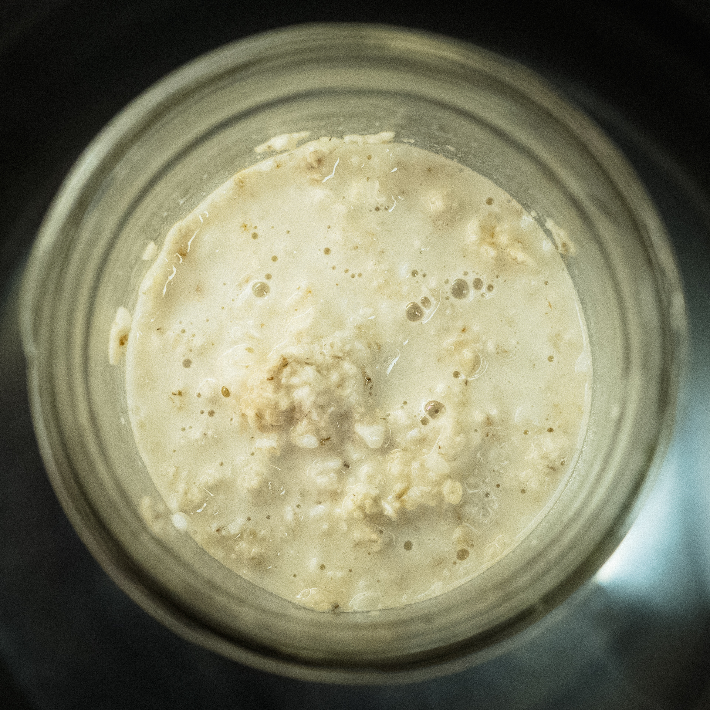

v.3
Here, increasing the amount of peanut butter, and adding salt before “fermenting”. I read a paper that seemed to suggest that salt improves the enzyme activity of koji.
I’m also reducing the amount of koji relative to oats, to make this more about the oats, and try to minimize koji so its just there for the enzymes rather than the rice. (So, doing 1 part koji to 4 parts oats.) Tripling peanut butter from v.2.
- 30 g koji
- 120 g instant oats
- 400 g whole milk
- 3 tbsp peanut butter
- 10 pinches salt (somewhere around 1 g)
Blended (to maximize enzyme activity) then into the instant pot overnight. Started at 10pm. I’m covering the pot and using a shorter jar so that water reaches almost to the top, to get more even heating.
v.2
- 50 g koji
- 100 g instant oats
- 400 g whole milk
- 1 tbsp peanut butter
Heated up to 140°F in the microwave, then put in a warm oven and reheated as needed to keep around 140°. Started around 2:30pm.
I liked this better than v.1 and drank it mornings through the week. It’s best diluted with hot water and with a pinch of salt.

v.1
- 90 g koji
- 90 g instant oats
- 360 g water at 140°F
11pm, combined above in a glass jar and stirred, then put in a water bath in the instant pot set to 140°F. I loosely put a lid on the jar.
Next morning blended to smooth and mixed with a little half and half. I found that its best as a drink when diluted with hot water.
Next, try 1 part koji to 2 parts oats, and use milk instead of water to get more protein for the koji to work on.